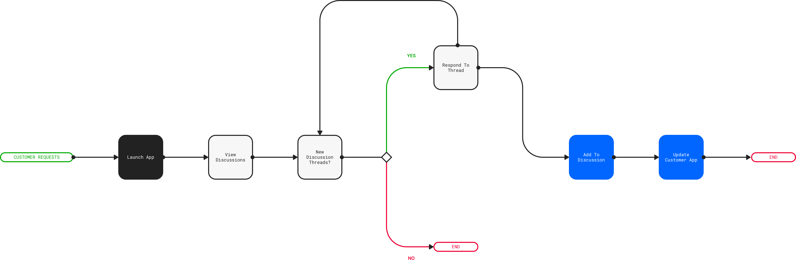
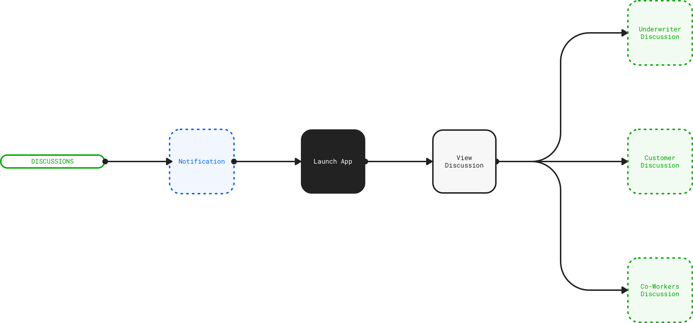
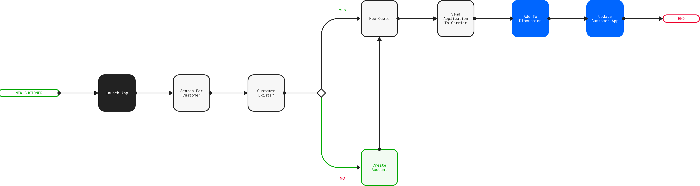

Cocoa
About
The goal is to figure out where insurance software needs to go to appeal to the next generation of insurance agents: Generation Z and beyond.
Meet Maria
Maria is a young insurance agent. She’s completed her training and is looking for a way to earn a living as an agent. Maria didn’t choose to become an agent. She did so because there wasn’t enough money coming from freelancing as an Uber driver, or running tasks using Task Rabbit. She wants a more steady source of income. Her mother was an insurance agent and she recommended Maria at least try being an agent. After going through the training she’s ready to at least try being an agent.
Maria wants minimum on-boarding, and maximum productivity from the get-go. She wants a delightful, intuitive, and engaging experience even in a commercial, enterprise app. Maria will not accept sub-par experiences. She demands a higher quality experience.
User Flows.
  Screens
Homepage
The homepage offers Maria an at-a-glance view of how her business is doing. Insurance agents get paid with commissions and agency fees on premiums from customers. Keeping track of that information vs. the number of claims that are eating into their revenue and profits is an important indicator on how Maria’s agency is doing.
Customer Details
Maria can quickly search for any customer and find out about their policy details, claims history, premiums and other information. The app is built around search. Speed is the key.
Chat With Customers
For an insurance agent like Maria with hundreds of customers, it’s very difficult to remember the last thing a customer might have said weeks or months ago. For Maria’s customer though, that is the thing they remember. And they expect their agent to be able to quick respond based on their last converstaion. The Chat view is a Slack-style interface that lets Maria talk to one customer or dozens, and quickly switch context when a customer asks a question.
Maria’s Todos.
Maria has a lot on her mind. Rather than try to juggle hundreds of tasks on pieces of paper or across several apps, Cocoa has a built-in todo manager that helps Maria keep track of her tasks and relate them to the specific customers that they are related to.
So, How can I help you?